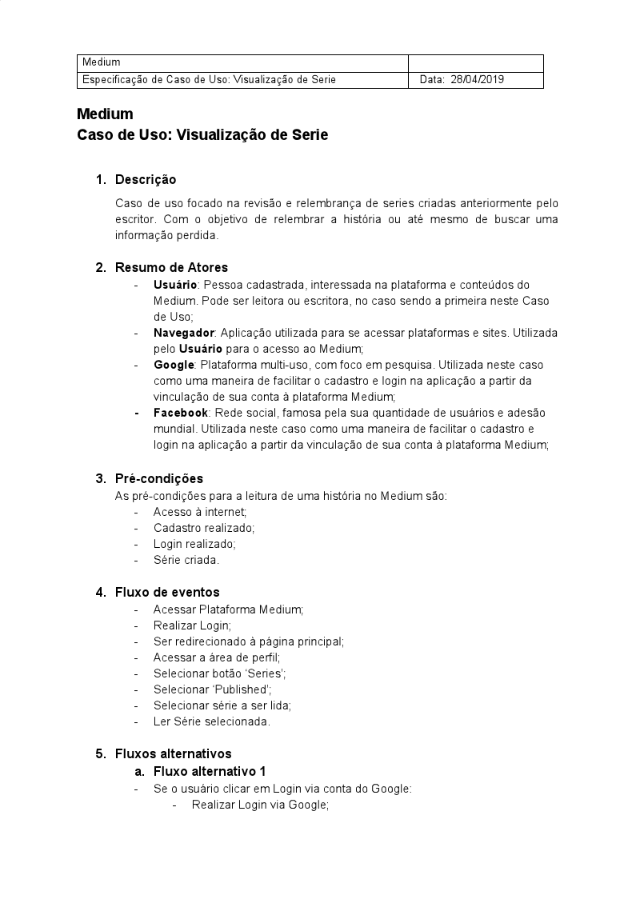
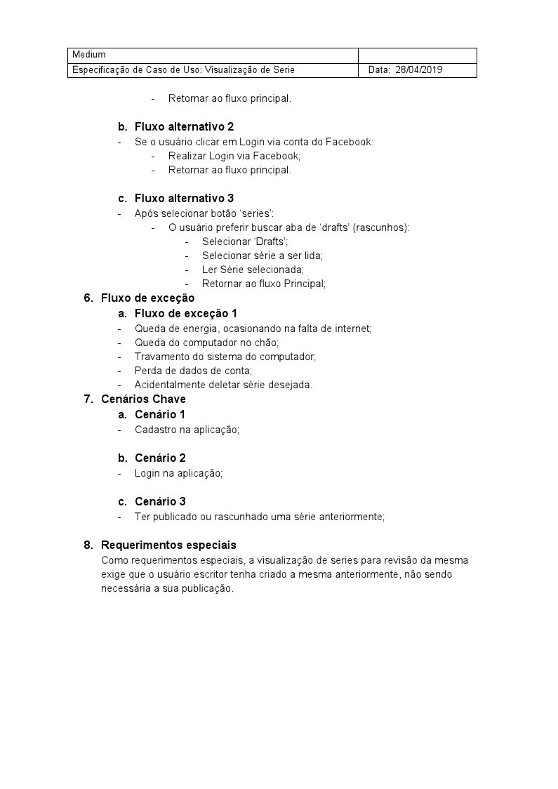

Versionamento de edições
| Data | autor | Descrição | Versão |
|---|---|---|---|
| 28/04/2019 | William Elias Alves | Criação da página | 0.1 |
| 28/04/2019 | William Elias Alves | Inserção das especificações | 0.2 |
| 08/06/2019 | Luís Cláudio T. Lima | Correção da numeração das UC's | 0.3 |
| 21/06/2019 | Luís Cláudio T. Lima | Refatoração de especificações | 0.4 |
| 22/06/2019 | Luís Cláudio T. Lima | Refatoração de mais especificações e adição de links para as versões em cada UC | 0.5 |
| 23/06/2019 | Luís Cláudio T. Lima | Refatoranção das especificações concluída | 0.6 |
Definição
Com o auxílio do desenvolvimento de cenários, ficou possível obter uma visão mais clara a respeito da concepção de casos de uso. Os casos de uso facilitam na obtenção de uma visão geral a respeito de dada funcionalidade de uma aplicação e poderá ser usada beneficamente por desenvolvedores, pois ela contém aspectos relevantes referentes a relacionamentos entre entidades.
Especificações
ir para versão final(refatorada)
Área comum(william elias alves)
UC01-Efetuar Cadastro
| Descrição | Funcionalidade responsável por realizar cadastro na aplicação. |
| Atores | Visitante e Usuário |
| Pré-condições | Visitante deve estar conectado à internet |
| Pós-condições | Visitante se tornará Usuário Usuário estará logado na aplicação Usuário terá acesso às funcionalidades da aplicação |
| Fluxo principal | [FP01] Este fluxo se inicia quando o usuário deseja realizar o cadastro na aplicação: 1-Visitante clica em 'Sign in' 2-Visitante clica em 'create one' 3-Visitante escolhe entre as opções de integração via redes sociais 4-Visitante escolhe tópicos de interesse 5-Visitante é redirecionada a página principal da aplicação já logado |
| Fluxo alternativo | [FA01] Possibilidade de integração via E-mail: No passo 3 do fluxo principal, há a opção de login via E-mail |
| Fluxo de exceção | [FE01] Verificação de conexão à internet No passo 3 há a verificação de conexão com a internet [FE02] Erro no serviço de integração de contas No passo 3, a integração com as redes sociais deve retornar status 200 |
UC02-Efetuar Login
| Descrição | Funcionalidade responsável por realizar login na aplicação. |
| Atores | Usuário |
| Pré-condições | Usuário deve estar conectado à internet Usuário deve ter um cadastro ativo |
| Pós-condições | Usuário estará logado na aplicação Usuário terá acesso às funcionalidades da aplicação |
| Fluxo principal | [FP01] Este fluxo se inicia quando o usuário deseja realizar o login na aplicação: 1-Usuário clica em 'Sign in' 2-Usuário escolhe entre as opções de integração via redes sociais 3-Usuário é redirecionada a página principal da aplicação já logado |
| Fluxo alternativo | [FA01] Possibilidade de integração via E-mail: No passo 2 do fluxo principal, há a opção de login via E-mail |
| Fluxo de exceção | [FE01] Verificação de conexão à internet No passo 2 há a verificação de conexão com a internet [FE02] Erro no serviço de integração de contas No passo 2, a integração com as redes sociais deve retornar status 200 |
UC03-Pesquisar artigo
| Descrição | Funcionalidade responsável por realizar pesquisa de artigos na plataforma Medium. |
| Atores | Visitante e Usuário |
| Pré-condições | Usuário/Visitante deve estar conectado à internet |
| Pós-condições | Usuário/Visitante receberá um artigo para leitura |
| Fluxo principal | [FP01] Este fluxo se inicia quando o usuário pesquisar um artigo na aplicação 1-Usuário/Visitante clica no ícone da lupa 2-Usuário/Visitante insere o termo a ser pesquisado 3-Usuário/Visitante recebe como resultado um ou mais artigos para leitura |
| Fluxo alternativo | [FA01] Selecionar podcast: No passo 3 do fluxo principal, há a opção de selecionar um podcast a ser escutado |
| Fluxo de exceção | [FE01] Verificação de conexão à internet No passo 2 há a verificação de conexão com a internet [FE02] Nenhum resultado No passo 3, pode haver um erro de digitação ou a não existência de artigos/podcasts para o termo inserido |
UC04-Escutar podcast
| Descrição | Funcionalidade responsável pela possibilidade de escutar um podcast. |
| Atores | Visitante e Usuário |
| Pré-condições | Usuário/Visitante deve estar conectado à internet |
| Pós-condições | Usuário/Visitante receberá/terá escutado um podcast |
| Fluxo principal | [FP01] Este fluxo se inicia quando o usuário seleciona um podcast a ouvir 1-Usuário/Visitante clica no podcast escolhido 2-Usuário/Visitante visualiza um reprodutor de mídia 3-Usuário/visitante clica em reproduzir |
| Fluxo alternativo | [FA01] Voltar para página principal: No passo 2 o usuário pode retornar a página principal da aplicação para selecionar outro podcast |
| Fluxo de exceção | [FE01] Verificação de conexão à internet No passo 2 há a verificação de conexão com a internet [FE02] Reprodutor com problemas No passo 3, pode haver um erro no reprodutor usado pela plataforma |
UC05-Ler artigo
| Descrição | Funcionalidade responsável por possibilitar a leitura de um artigo na plataforma Medium. |
| Atores | Visitante e Usuário |
| Pré-condições | Usuário/Visitante deve estar conectado à internet |
| Pós-condições | Usuário/Visitante terá lido um artigo |
| Fluxo principal | [FP01] Este fluxo se inicia quando o usuário selecionar um artigo para leitura 1-Usuário/Visitante clica no artigo escolhido 2-Usuário/Visitante visualiza a página com conteúdo do artigo |
| Fluxo de exceção | [FE01] Verificação de conexão à internet No passo 2 há a verificação de conexão com a internet |
UC06-Visualizar artigos populares
| Descrição | Funcionalidade responsável exibir artigos populares. |
| Atores | Visitante e Usuário |
| Pré-condições | Usuário/Visitante deve estar conectado à internet |
| Pós-condições | Usuário/Visitante visualizará os artigos populares na barra lateral direita da página principal da aplicação |
| Fluxo principal | [FP01] Este fluxo se inicia quando o usuário acessa a área principal da aplicação 1-Usuário/Visitante clica no ícone do Medium 2-Usuário/Visitante visualiza os artigos populares na lateral direita do site |
| Fluxo de exceção | [FE01] Verificação de conexão à internet No passo 2 há a verificação de conexão com a internet |
UC07-Visualizar artigos por categoria
| Descrição | Funcionalidade responsável pela exibição de artigos por categoria. |
| Atores | Visitante e Usuário |
| Pré-condições | Usuário/Visitante deve estar conectado à internet |
| Pós-condições | Usuário/Visitante receberá uma lista de artigos para leitura, dada uma categoria |
| Fluxo principal | [FP01] Este fluxo se inicia quando o usuário Acessa a página principal da aplicação 1-Usuário/Visitante clica no ícone do Medium 2-Usuário/Visitante visualiza a barra de categorias na área superior do site 3-Usuário/Visitante escolhe uma categoria 4-Usuário clica na categoria desejada 5-Usuário visualiza um lista de artigos |
| Fluxo de exceção | [FE01] Verificação de conexão à internet No passo 2 há a verificação de conexão com a internet [FE02] Nenhum resultado No passo 5, pode ser que não exista artigos/podcasts para o termo clicado |
UC08-Acessar área de ajuda
| Descrição | Funcionalidade responsável por exibir a área de ajuda da plataforma Medium. |
| Atores | Visitante e Usuário |
| Pré-condições | Usuário/Visitante deve estar conectado à internet |
| Pós-condições | Usuário/Visitante recebera várias instruções de utilização da plataforma |
| Fluxo principal | [FP01] Este fluxo se inicia em qualquer página do site 1-Usuário/Visitante clica em 'Help' 2-Usuário/Visitante Seleciona o tópico de ajuda desejado 3-Usuário/Visitante recebe instruções sobre dado assunto |
| Fluxo alternativo | [FA01] Acessar pela foto do perfil: O passo 1 pode ser substituido por acessar a página de ajuda por meio da foto do perfil de usuário |
| Fluxo de exceção | [FE01] Verificação de conexão à internet No passo 2 há a verificação de conexão com a internet |
UC09-Editar Perfil
| Descrição | Funcionalidade responsável por possibilitar a edição do perfil de usuário Medium. |
| Atores | Usuário |
| Pré-condições | Usuário deve estar conectado à internet Usuário deve estar logado |
| Pós-condições | Usuário terá editado seus informações básicas |
| Fluxo principal | [FP01] Este fluxo se inicia quando o usuário clica em 'profile' 1-Usuário clica em sua foto de usuário 2-Usuário clica em 'profile' 3-Usuário clica em edit 'profile' 4-Usuário altera seu nome no campo de texto 5-Usuário clica em sua foto de perfil 6-Usuário seleciona uma foto para o perfil de seu dispositivo 7-Usuário clica em 'save' |
| Fluxo alternativo | [FA01] Cancelar edição: No passo 7 do fluxo principal, há a opção de cancelar edição |
| Fluxo de exceção | [FE01] Verificação de conexão à internet No passo 2 há a verificação de conexão com a internet [FE02] Erro de leitura de imagem No passo 6, pode haver um erro de na leitura ou corrompimento da imagem 'upada' |
UC10-Configurar preferências
| Descrição | Funcionalidade responsável por exibir configurações da aplicação na plataforma web. |
| Atores | Usuário |
| Pré-condições | Usuário deve estar conectado à internet Usuário deve estar logado |
| Pós-condições | Usuário terá configurado alguns aspectos da aplicação |
| Fluxo principal | [FP01] Este fluxo se inicia quando o usuário clica na foto de seu perfil 1-Usuário clica em sua foto de perfil 2-Usuário clica em 'settings' 3-Usuário visualiza opções de configurações de e-mail, conexões, conta, membership e seguraça 4-Usuário modifica o que achar necessário |
| Fluxo de exceção | [FE01] Verificação de conexão à internet No passo 2 há a verificação de conexão com a internet |
UC11-Tornar-se membership
| Descrição | Funcionalidade responsável por exibir a área de membership. |
| Atores | Usuário |
| Pré-condições | Usuário deve estar conectado à internet |
| Pós-condições | Usuário se tornará membership |
| Fluxo principal | [FP01] Este fluxo se inicia quando o usuário clica em 'upgrade' 1-Usuário clica no ícone de 'upgrade' 2-Usuário clica em 'get start' 3-Usuário seleciona o plano desejado 4-Usuário seleciona a forma de pagamento 5-Usuário clica em 'Start my membership' |
| Fluxo de exceção | [FE01] Verificação de conexão à internet No passo 2 há a verificação de conexão com a internet |
Acesso ao Medium Membership(william elias alves)
UC12-Selecionar plano
| Descrição | Funcionalidade responsável por possibilitar a seleção de planos. |
| Atores | Usuário |
| Pré-condições | Usuário deve estar conectado à internet Usuário deve estar logado |
| Pós-condições | Usuário terá escolhido um plano de pagamento |
| Fluxo principal | [FP01] Este fluxo se inicia quando o usuário deseja selecionar um plano 1-Usuário clica no ícone de 'upgrade' 2-Usuário clica em 'get start' 3-Usuário seleciona o plano desejado |
| Fluxo de exceção | [FE01] Verificação de conexão à internet No passo 3 há a verificação de conexão com a internet |
UC13-Selecionar $5/Mês
| Descrição | Funcionalidade responsável por possibilitar a seleção do plano mensal. |
| Atores | Usuário |
| Pré-condições | Usuário deve estar conectado à internet |
| Pós-condições | Usuário terá selecionado o plano mensal |
| Fluxo principal | [FP01] Este fluxo se inicia quando o usuário deseja selecionar um plano 1-Usuário clica na área 'plain' 2-Usuário clica em plano mensal |
| Fluxo alternativo | [FA01] UC14-Selecionar $50/Ano |
UC14-Selecionar $50/Ano
| Descrição | Funcionalidade responsável por possibilitar a seleção do plano anual. |
| Atores | Usuário |
| Pré-condições | Usuário deve estar conectado à internet |
| Pós-condições | Usuário terá selecionado o plano mensal |
| Fluxo principal | [FP01] Este fluxo se inicia quando o usuário deseja selecionar um plano 1-Usuário clica na área 'plain' 2-Usuário clica em plano anual |
| Fluxo alternativo | [FA01] UC13-Selecionar $5/Mês |
UC15-Selecionar Método de pagamento
| Descrição | Funcionalidade responsável por possibilitar a seleção do método de pagamento. |
| Atores | Usuário |
| Pré-condições | Usuário deve estar conectado à internet |
| Pós-condições | Usuário terá selecionado o método de pagamento |
| Fluxo principal | [FP01] Este fluxo se inicia quando o usuário deseja selecionar um método de pagamento 1-Usuário clica na área 'payment' 2-Usuário clica em 'credit card' |
| Fluxo alternativo | [FA01] UC16-Pagar via PayPal** |
UC16-Pagar via PayPal
| Descrição | Funcionalidade responsável por possibilitar a seleção do método de pagamento como PayPal. |
| Atores | Usuário |
| Pré-condições | Usuário deve estar conectado à internet |
| Pós-condições | Usuário terá selecionado o método de pagamento |
| Fluxo principal | [FP01] Este fluxo se inicia quando o usuário deseja selecionar o método de pagamento como Paypal 1-Usuário clica em 'payments' 2-Usuário clica em PayPal 3-Usuário visualiza um modal de inserção de dados do PayPal 4-Usuário insere seus dados de login no PayPal |
| Fluxo alternativo | [FA01] UC17-Pagar via cartão de crédito** |
| Fluxo de exceção | [FE01] Dados PaylPal inválidos No passo 4 pode haver inconsistência nos dados inseridos o que impossibilita a execução dos próximos passos |
UC17-Pagar via cartão de crédito
| Descrição | Funcionalidade responsável disponibilizar o método de pagamento como Cartão de crédito. |
| Atores | Usuário |
| Pré-condições | Usuário deve estar conectado à internet |
| Pós-condições | Usuário terá escolhido o método de pagamento como cartão de crédito |
| Fluxo principal | [FP01]O fluxo se inicia quando o usuário deseja selecionar o método de pagamento como Cartão de crédito 1-Usuário insere o número do cartão 2-Usuário insere a data de expiração do cartão 3-Usuário insere o código de segurança do cartão |
| Fluxo alternativo | [FA01] UC16-Pagar via PayPal |
| Fluxo de exceção | [FE01] Dados do cartão de crédito inválidos No passo 1,2 e 3 pode haver inconsistência nos dados inseridos o que impossibilita a execução dos próximos passos |
UC18-Acessar área de membro vip
| Descrição | Funcionalidade responsável disponibilizar o método de pagamento como Cartão de crédito. |
| Atores | Usuário |
| Pré-condições | Usuário deve estar conectado à internet |
| Pós-condições | Usuário visualizará a área de membership |
| Fluxo principal | [FP01]O fluxo se inicia quando o usuário deseja acessar a área de membership 1-Usuário clica em 'access' |
Series (Matheus Blanco)
Versão 1.0
 
Versão 2.0
UC19-Acessar menu lateral
| Descrição | Funcionalidade responsável por disponibilizar um DropDown de opções para o usuário. |
| Atores | Usuário |
| Pré-condições | Usuário deve estar logado |
| Pós-condições | Usuário visualizará as opções |
| Fluxo principal | [FP01] O fluxo se inicia quando o usuário deseja acessar o menu lateral 1-Usuário clica no ícone de perfil |
UC20-Visualizar Series
| Descrição | Funcionalidade responsável por disponibilizar uma página que mostra as series criadas como rascunho ou publicadas. |
| Atores | Usuário |
| Pré-condições | Usuário deve possuir rascunhos e/ou series publicados |
| Pós-condições | Usuário poderá criar series, publicar rascunhos ou visualizar os publicados |
| Fluxo principal | [FP01] O fluxo se inicia quando o usuário acessa a página de Series 1-Usuário clica no botão series no menu lateral; 2-Usuário visualiza rascunhos criados. |
| Fluxo alternativo | [FA01] UC22 - Visualizar published; [FA02] UC23 - Criar series |
UC21-Visualizar Drafts
| Descrição | Funcionalidade responsável por permitir que o usuário acesse e reveja os rascunhos de series criados anteriormente. |
| Atores | Usuário |
| Pré-condições | Usuário deve ter acessado a página de series e ter rascunhos salvos |
| Pós-condições | Usuário visualizará as opções |
| Fluxo principal | [FP01] O fluxo se inicia quando o usuário deseja abrir as series rascunhadas 1-Usuário seleciona uma serie criada 2-Usuário lê a serie criada |
| Fluxo alternativo | [FA01] UC26 - Editar rascunho |
UC22-Visualizar Published
| Descrição | Funcionalidade responsável por permitir que o usuário acesse e reveja as series publicadas anteriormente. |
| Atores | Usuário |
| Pré-condições | Usuário deve ter acessado a página de series e series publicadas |
| Pós-condições | Usuário visualizará as opções de series publicadas |
| Fluxo principal | [FP01] O fluxo se inicia quando o usuário deseja abrir as series publicadas 1-Usuário seleciona uma serie publicada 2-Usuário lê a serie criada |
UC23 - Criar Serie
| Descrição | Funcionalidade responsável por permitir que o usuário crie uma nova serie. |
| Atores | Usuário |
| Pré-condições | Usuário deve ter acessado a página de series |
| Pós-condições | Usuário poderá rascunhar e publicar a história criada |
| Fluxo principal | [FP01] O fluxo se inicia quando o usuário deseja criar uma nova serie 1-Usuário aperta o botão de Create Series** 2-Usuário cria a serie, incluindo texto, imagens |
| Fluxo alternativo | [FA01] UC25 - Publicar serie [FA02] UC24 - Enviar prévia para app de celular |
UC24 - Enviar prévia para app de celular
| Descrição | Funcionalidade responsável por permitir que o usuário envie a prévia do rascunho para ser visualizada no aplicativo de celular. |
| Atores | Usuário |
| Pré-condições | Usuário deve ter criado e salvo o rascunho de uma serie |
| Pós-condições | Usuário poderá visualizar a serie no celular |
| Fluxo principal | [FP01] O fluxo se inicia quando o usuário deseja mandar a serie para o aplicativo de celular 1-Usuário aperta o botão de Send preview to phone 2-Usuário visualiza serie no celular |
UC25-Publicar Serie
| Descrição | Funcionalidade responsável por permitir que o usuário publique sua serie. |
| Atores | Usuário |
| Pré-condições | Usuário deve ter criado e salvo o rascunho de uma serie |
| Pós-condições | Usuário poderá visualizar a serie publicada |
| Fluxo principal | [FP01] O fluxo se inicia quando o usuário deseja publicar a serie para que outros usuários a vejam 1-Usuário aperta o botão de publicar 2-Usuário visualiza a serie publicada no computador |
UC26-Editar rascunho
| Descrição | Funcionalidade responsável por permitir que o usuário faça edições no rascunho criado. |
| Atores | Usuário |
| Pré-condições | Usuário deve ter criado e salvo o rascunho de uma serie |
| Pós-condições | Usuário poderá melhorar o rascunho e posteriormente, publicá-lo |
| Fluxo principal | [FP01] O fluxo se inicia quando o usuário deseja editar o rascunho criado 1-Usuário visualiza a página com os rascunhos 2-Usuário seleciona um rascunho a ser editado 3-Usuário edita o rascunho 4-Usuário pode sair da página recente para salvar o rascunho recém editado. |
UC Stories (Aline Laureano)
UC27 - Acessar menu lateral do usuário
| Descrição | Funcionalidade responsável por mostrar todas as ações que somente um usuário com login efetuado pode fazer. |
| Atores | Usuário |
| Pré-condições | Usuário deve estar conectado à internet, ser cadastrado na plataforma Medium e estar com o login efetuado no Medium. |
| Pós-condições | Usuário visualizará as funcionalidades disponíveis para um usuário com o login efetuado. |
| Fluxo principal | [FP01] Este fluxo se inicia quando o usuário deseja visualizar as funcionalidades disponíveis para um usuário com o login efetuado: 1-Usuário clica na sua foto de perfil localizida no superior esquerdo da página. 2-É mostrado ao usuário logado um menu lateral com as funcionalidades disponíveis para ele. |
| Fluxo de exceção | [FE01] Verificação de conexão à internet |
UC28-Visualizar Stories
| Descrição | Funcionalidade responsável por mostrar uma aŕea com todos os rascunhos e publicações de stories de um usuário. |
| Atores | Usuário |
| Pré-condições | Usuário deve estar conectado à internet, ser cadastrado na plataforma Medium e estar com o login efetuado no Medium. |
| Pós-condições | Usuário visualizará a área de Stories. |
| Fluxo principal | [FP01]O fluxo se inicia quando o usuário deseja visualizar a área com todas as suas publicações e rascunhos: 1-[UC27] Acessar menu lateral do usuário. 2-Usuário clica na opção "Stories". 3-O usuário visualizará a área de Stories. |
| Fluxo de exceção | [FE01] Verificação de conexão à internet |
UC29-Visualizar Drafts
| Descrição | Funcionalidade responsável por mostrar todos os Drafts de um usuário. |
| Atores | Usuário |
| Pré-condições | Usuário deve estar conectado à internet, ser cadastrado na plataforma Medium e estar com o login efetuado no Medium. |
| Pós-condições | Usuário visualizará os seus Drafts. |
| Fluxo principal | [FP01] Este fluxo se inicia quando o usuário deseja visualizar a área com todos os Drafts feitos por ele: 1-[US02] Usuário visualiza a área de Stories. 2-O sistema retorna para a visualização do usuário todos os Drafts feitos pelo usuário. |
| Fluxo alternativo | [FA01] UC30-Visualizar Publicações. [FA02] UC31- Importar uma Story. [FA03] UC32-Escrever uma nova Story. |
| Fluxo de exceção | [FE01] Verificação de conexão à internet |
UC30-Visualizar Publicações
| Descrição | Funcionalidade responsável por mostrar todos as Publicações de um usuário. |
| Atores | Usuário |
| Pré-condições | Usuário deve estar conectado à internet, ser cadastrado na plataforma Medium e estar com o login efetuado no Medium. |
| Pós-condições | Usuário visualizará as suas Publicações. |
| Fluxo principal | [FP01] Este fluxo se inicia quando o usuário deseja visualizar a área com todos as publicações feitas por ele: 1-[US02] Usuário visualiza a área de Stories. 2-O usuário clica sobre a opção "Publishes" localizada ao lado da opção "Drafts". 3-O sistema retorna para a visualização do usuário todos as publicações feitas pelo usuário. |
| Fluxo alternativo | [FA01] UC29-Visualizar Drafts. [FA02] UC31- Importar uma Story. [FA03] UC32-Escrever uma nova Story. |
| Fluxo de exceção | [FE01] Verificação de conexão à internet |
UC31-Importar uma Story.
| Descrição | Funcionalidade responsável por permitir que um usuário publique uma story já publicada em qualquer outro site. |
| Atores | Usuário |
| Pré-condições | Usuário deve estar conectado à internet, ser cadastrado na plataforma Medium e estar com o login efetuado no Medium. |
| Pós-condições | Usuário publicará uma story já publicada em qualquer outro site. |
| Fluxo principal | [FP01] Este fluxo se inicia quando o usuário deseja publicar uma story já existente em qualquer outro site: 1-[US02] Usuário visualiza a área de Stories. 2-O usuário clica sobre a opção "Import a story" localizada ao lado da opção "Write a story". 3-O sistema solicita o link da story que o usuário quer publicar. 4-O usuário insere o link e clica no botão "import". 5-O usuário edita a story importada. 6-O usuário clica na opção "Ready to publish?". 7-O sistema redireciona o usuário para uma página com a prévia da publicação importada. 8-O usuário clica na opção "Publish now". 9-O sistema retorna uma mensagem de publicação realizada com sucesso. |
| Fluxo alternativo | [FA01] UC29-Visualizar Drafts. [FA02] UC30-Visualizar publicações. [FA03] UC32-Escrever uma nova Story. |
| Fluxo de exceção | [FE01] Verificação de conexão à internet |
UC32-Escrever uma nova Story.
| Descrição | Funcionalidade responsável por permitir que um usuário crie uma nova story. |
| Atores | Usuário |
| Pré-condições | Usuário deve estar conectado à internet, ser cadastrado na plataforma Medium e estar com o login efetuado no Medium. |
| Pós-condições | Usuário terá a sua nova story publicada. |
| Fluxo principal | [FP01] Este fluxo se inicia quando o usuário deseja publicar uma nova story: 1-[US02] Usuário visualiza a área de Stories. 2-O usuário clica sobre a opção "Write a story" localizada ao lado da opção "Import a story". 3-O sistema redireciona o usuário para uma página de criação da nova story. 4-O usuário insere o conteúdo da nova story e clica no botão "Ready to publish?". 5-O sistema redireciona o usuário para uma página com a prévia da nova publicação. 6-O usuário clica na opção "Publish now". 7-O sistema retorna uma mensagem de publicação realizada com sucesso. |
| Fluxo alternativo | [FA01] UC29-Visualizar Drafts. [FA02] UC30-Visualizar publicações. [FA03] UC31-Importar uma Story. |
| Fluxo de exceção | [FE01] Verificação de conexão à internet |
UC33-Editar Drafts
| Descrição | Funcionalidade responsável por permitir que um usuário edite um draft. |
| Atores | Usuário |
| Pré-condições | Usuário deve estar conectado à internet, ser cadastrado na plataforma Medium e estar com o login efetuado no Medium. |
| Pós-condições | Usuário terá o seu draft editado. |
| Fluxo principal | [FP01] Este fluxo se inicia quando o usuário deseja editar um draft: 1-[US02] Usuário visualiza a área de Stories. 2-O usuário clica sobre uma seta apontada para baixo localizada ao lado da descrição do draft que ele quer editar. 3-O usuário clica na opção "Edit draft" localizada em baixo da seta. 4-O sistema redireciona o usuário para uma página de edição do draft. 5-O usuário insere as alterações no conteúdo do draft e sai da página de edição sem salvar o rascunho. 6-O sistema irá salvar as edições feitas no rascunho. |
| Fluxo alternativo | [FA01] UC34-Excluir Draft. |
| Fluxo de exceção | [FE01] Verificação de conexão à internet |
UC34-Excluir Draft
| Descrição | Funcionalidade responsável por permitir que um usuário exclua um draft. |
| Atores | Usuário |
| Pré-condições | Usuário deve estar conectado à internet, ser cadastrado na plataforma Medium e estar com o login efetuado no Medium. |
| Pós-condições | Usuário terá o seu draft excluído. |
| Fluxo principal | [FP01] Este fluxo se inicia quando o usuário deseja excluir um draft: 1-[US02] Usuário visualiza a área de Stories. 2-O usuário clica sobre uma seta apontada para baixo localizada ao lado da descrição do draft que ele quer excluir. 3-O usuário clica na opção "Delete draft" localizada em baixo da seta. 4-O sistema redireciona o usuário para uma página para confirmar a exclusão do draft. 5-O usuário clica sobre o botão "Delete". 5-O sistema sistema redireciona o usuário para a página de visualização de drafts sem o draft excluído. |
| Fluxo alternativo | [FA01] UC33-s. |
| Fluxo de exceção | [FE01] Verificação de conexão à internet |
UC35-Editar Publicação
| Descrição | Funcionalidade responsável por permitir que um usuário edite uma publicação. |
| Atores | Usuário |
| Pré-condições | Usuário deve estar conectado à internet, ser cadastrado na plataforma Medium e estar com o login efetuado no Medium. |
| Pós-condições | Usuário terá a sua publicação editada. |
| Fluxo principal | [FP01] Este fluxo se inicia quando o usuário deseja editar uma publicação: 1-[US04] Usuário visualiza a área de Publicações. 2-O usuário clica sobre uma seta apontada para baixo localizada ao lado da descrição da publicação que ele quer editar. 3-O usuário clica na opção "Edit story" localizada em baixo da seta. 4-O sistema redireciona o usuário para uma página de edição da story. 5-O usuário insere as alterações no conteúdo da story e clica no botão "Save and publish". 6-O sistema redireciona o usuário para a página da story com as alterações feitas. |
| Fluxo alternativo | [FA01] UC36-Excluir Publicação. |
| Fluxo de exceção | [FE01] Verificação de conexão à internet |
UC36-Excluir Publicação
| Descrição | Funcionalidade responsável por permitir que um usuário exclua uma publicação. |
| Atores | Usuário |
| Pré-condições | Usuário deve estar conectado à internet, ser cadastrado na plataforma Medium e estar com o login efetuado no Medium. |
| Pós-condições | Usuário terá a sua publicação excluída. |
| Fluxo principal | [FP01] Este fluxo se inicia quando o usuário deseja excluir uma story: 1-[US04] Usuário visualiza a área de Publicações. 2-O usuário clica sobre uma seta apontada para baixo localizada ao lado da descrição da publicação que ele quer excluir. 3-O usuário clica na opção "Delete story" localizada em baixo da seta. 4-O sistema redireciona o usuário para uma página para confirmar a exclusão da story. 5-O usuário clica sobre o botão "Delete". 5-O sistema sistema redireciona o usuário para a página de visualização de publicações sem a story excluída. |
| Fluxo alternativo | [FA01] UC35-Editar Publicação. |
| Fluxo de exceção | [FE01] Verificação de conexão à internet |
Especificações(versão final)
Responsável: Luís Cláudio T. Lima
Área comum(william elias alves)
UC01-Efetuar Cadastro
| Descrição | Funcionalidade responsável por realizar cadastro na aplicação. |
| Atores | Visitante e Usuário |
| Pré-condições | Visitante deve estar conectado à internet |
| Pós-condições | Visitante se tornará Usuário Usuário estará logado na aplicação Usuário terá acesso às funcionalidades da aplicação |
| Fluxo principal | [FP01] Este fluxo se inicia quando o usuário deseja realizar o cadastro na aplicação: 1-Visitante clica em 'Get started' 2-Visitante escolhe entre as opções de integração via redes sociais 3-Visitante escolhe tópicos de interesse 4-Visitante é redirecionado a página principal da aplicação já logado |
| Fluxo alternativo | [FA01] Possibilidade de cadastro clicando em "Sign in" 1-Visitante clica em 'Sign in' 2-Visitante clica em 'create one' e segue a partir do passo 2 do [FP01] |
| Fluxo de exceção | [FE01] Falha de conexão à internet No passo 3 ocorre um erro de conexão com a internet [FE02] Erro no serviço de integração de contas No passo 3, a integração com as redes sociais deve retornar status 200 |
UC02-Efetuar Login
| Descrição | Funcionalidade responsável por realizar login na aplicação. |
| Atores | Usuário |
| Pré-condições | Usuário deve estar conectado à internet Usuário deve ter um cadastro ativo |
| Pós-condições | Usuário estará logado na aplicação Usuário terá acesso às funcionalidades da aplicação |
| Fluxo principal | [FP01] Este fluxo se inicia quando o usuário deseja realizar o login na aplicação: 1-Usuário clica em 'Sign in' 2-Usuário escolhe entre as opções de integração via redes sociais 3-Usuário é redirecionada a página principal da aplicação já logado |
| Fluxo alternativo | [FA01] Possibilidade de integração via E-mail: No passo 2 do fluxo principal, há a opção de login via E-mail |
| Fluxo de exceção | [FE01] Falha de conexão à internet No passo 2 ocorre um erro de conexão com a internet [FE02] Erro no serviço de integração de contas No passo 2, a integração com as redes sociais deve retornar status 200 |
UC03-Pesquisar artigo
| Descrição | Funcionalidade responsável por realizar pesquisa de artigos na plataforma Medium. |
| Atores | Visitante e Usuário |
| Pré-condições | Usuário/Visitante deve estar conectado à internet |
| Pós-condições | Usuário/Visitante terá visualizado o(s) resultado(s) de sua pesquisa |
| Fluxo principal | [FP01] Este fluxo se inicia quando o usuário deseja pesquisar um artigo na aplicação 1-Usuário/Visitante clica no ícone da lupa 2-Usuário/Visitante insere o termo a ser pesquisado 3-Usuário/Visitante visualiza o(s) resultado(s) de sua pesquisa. |
| Fluxo de exceção | [FE01] Falha de conexão à internet No passo 2 ocorre um erro de conexão com a internet |
UC04-Escutar podcast
| Descrição | Funcionalidade responsável por permitir escutar um podcast. |
| Atores | Visitante e Usuário |
| Pré-condições | Usuário/Visitante deve estar conectado à internet |
| Pós-condições | Usuário/Visitante receberá/terá escutado um podcast |
| Fluxo principal | [FP01] Este fluxo se inicia quando o usuário seleciona um podcast a ouvir 1-Usuário/Visitante clica no podcast escolhido 2-Usuário/Visitante visualiza um reprodutor de mídia 3-Usuário/visitante clica em reproduzir 4-Usuário/visitante escuta o podcast |
| Fluxo alternativo | [FA01] Voltar para página principal: No passo 2 o usuário pode retornar a página principal da aplicação para selecionar outro podcast |
| Fluxo de exceção | [FE01] Falha de conexão à internet No passo 2 ocorre um erro de conexão com a internet [FE02] Reprodutor com problemas No passo 3, pode haver um erro no reprodutor usado pela plataforma |
UC05-Ler artigo
| Descrição | Funcionalidade responsável por permitir a leitura de um artigo na plataforma Medium. |
| Atores | Visitante e Usuário |
| Pré-condições | Usuário/Visitante deve estar conectado à internet |
| Pós-condições | Usuário/Visitante terá lido um artigo |
| Fluxo principal | [FP01] Este fluxo se inicia quando o usuário selecionar um artigo para leitura 1-Usuário/Visitante clica no artigo escolhido 2-Usuário/Visitante visualiza a página com conteúdo do artigo |
| Fluxo de exceção | [FE01] Falha de conexão à internet No passo 2 ocorre um erro de conexão com a internet |
UC06-Visualizar artigos populares
| Descrição | Funcionalidade responsável exibir artigos populares. |
| Atores | Visitante e Usuário |
| Pré-condições | Usuário/Visitante deve estar conectado à internet |
| Pós-condições | Usuário/Visitante visualizará os artigos populares na barra lateral direita da página principal da aplicação |
| Fluxo principal | [FP01] Este fluxo se inicia quando o usuário acessa a área principal da aplicação 1-Usuário/Visitante clica no ícone do Medium 2-Usuário/Visitante visualiza os artigos populares na lateral direita do site |
| Fluxo de exceção | [FE01] Falha de conexão à internet No passo 2 ocorre um erro de conexão com a internet |
UC07-Visualizar artigos por categoria
| Descrição | Funcionalidade responsável pela exibição de artigos por categoria. |
| Atores | Visitante e Usuário |
| Pré-condições | Usuário/Visitante deve estar conectado à internet |
| Pós-condições | Usuário/Visitante receberá uma lista de artigos para leitura, dada uma categoria |
| Fluxo principal | [FP01] Este fluxo se inicia quando o usuário Acessa a página principal da aplicação 1-Usuário/Visitante clica no ícone do Medium 2-Usuário/Visitante visualiza a barra de categorias na área superior do site 3-Usuário/Visitante escolhe uma categoria 4-Usuário clica na categoria desejada 5-Usuário visualiza um lista de artigos |
| Fluxo de exceção | [FE01] Falha de conexão à internet No passo 2 ocorre um erro de conexão com a internet [FE02] Nenhum resultado No passo 5, pode ser que não exista artigos para o termo clicado |
UC08-Acessar área de ajuda
| Descrição | Funcionalidade responsável por exibir a área de ajuda da plataforma Medium. |
| Atores | Visitante e Usuário |
| Pré-condições | Usuário/Visitante deve estar conectado à internet |
| Pós-condições | Usuário/Visitante recebera várias instruções de utilização da plataforma |
| Fluxo principal | [FP01] Este fluxo se inicia em qualquer página do site 1-Usuário/Visitante clica em 'Help' 2-Usuário/Visitante Seleciona o tópico de ajuda desejado 3-Usuário/Visitante recebe instruções sobre dado assunto |
| Fluxo alternativo | [FA01] Acessar pela foto do perfil: O passo 1 pode ser substituido por acessar a página de ajuda por meio da foto do perfil de usuário |
| Fluxo de exceção | [FE01] Falha de conexão à internet No passo 2 ocorre um erro de conexão com a internet |
UC09-Editar Perfil
| Descrição | Funcionalidade responsável pela edição de perfil do usuário Medium. |
| Atores | Usuário |
| Pré-condições | Usuário deve estar conectado à internet Usuário deve estar logado |
| Pós-condições | Usuário terá editado suas informações básicas |
| Fluxo principal | [FP01] Este fluxo se inicia quando o usuário clica em 'profile' 1-Usuário clica em sua foto de usuário 2-Usuário clica em 'profile' 3-Usuário clica em edit 'profile' 4-Usuário altera seu nome no campo de texto 5-Usuário clica em sua foto de perfil 6-Usuário seleciona uma foto para o perfil de seu dispositivo 7-Usuário clica em 'save' |
| Fluxo de exceção | [FE01] Verificação de conexão à internet No passo 2 há a verificação de conexão com a internet [FE02] Erro de leitura de imagem No passo 6, pode haver um erro de leitura ou corrompimento do imagem 'upada' [FE03] Cancelamento de edição No passo 7 do fluxo principal, o usuário seleciona a opção cancelar impedindo a edição de perfil |
UC10-Configurar preferências
| Descrição | Funcionalidade responsável pelas configurações de usuário e de preferências da aplicação na plataforma web. |
| Atores | Usuário |
| Pré-condições | Usuário deve estar conectado à internet Usuário deve estar logado |
| Pós-condições | Usuário terá configurado aspectos da aplicação de acordo com sua preferência |
| Fluxo principal | [FP01] Este fluxo se inicia quando o usuário clica na foto de seu perfil 1-Usuário clica em sua foto de perfil 2-Usuário clica em 'settings' 3-Usuário visualiza opções de configurações de e-mail, notificações, sugestão de artigos, boletim informativo, privacidade de menções, usuários bloqueados, conexões, conta (deslogar, desativar, deletar links para redes sociais, download de informações), tutoriais, glossário, pesquisa de satisfação, ajudamembership e segurança 4-Usuário modifica o que achar necessário |
| Fluxo de exceção | [FE01] Falha de conexão à internet No passo 2 ocorre um erro de conexão com a internet |
UC11-Tornar-se membership
| Descrição | Funcionalidade responsável por tornar o usuário membership. |
| Atores | Usuário |
| Pré-condições | Usuário deve estar conectado à internet Usuário deve estar logado |
| Pós-condições | Usuário se tornará membership |
| Fluxo principal | [FP01] Este fluxo se inicia quando o usuário clica em 'upgrade' 1-Usuário clica no ícone de 'upgrade' 2-Usuário clica em 'get start' 3-Usuário seleciona o plano desejado 4-Usuário seleciona a forma de pagamento 5-Usuário clica em 'Start my membership' |
| Fluxo alternativo | [FA01] Este fluxo se inicia quando o usuário clica no ícone de perfil 1-Usuário clica no ícone de perfil 2-Usuário clica em 'Become a member' 3-Usuário segue a partir do passo 3 do [FP01] |
| Fluxo de exceção | [FE01] Falha de conexão à internet No passo 2 ocorre um erro de conexão com a internet |
Acesso ao Medium Membership(william elias alves)
UC12-Selecionar plano
| Descrição | Funcionalidade responsável pela seleção de planos de pagamento. |
| Atores | Usuário |
| Pré-condições | Usuário deve estar conectado à internet Usuário deve estar logado |
| Pós-condições | Usuário terá escolhido um plano de pagamento |
| Fluxo principal | [FP01] Este fluxo se inicia quando o usuário deseja selecionar um plano 1-Usuário clica no ícone de 'upgrade' 2-Usuário clica em 'get start' 3-Usuário seleciona o plano desejado |
| Fluxo alternativo | [FA01] Este fluxo se inicia quando o usuário clica no ícone de perfil 1-Usuário clica no ícone de perfil 2-Usuário clica em 'Become a member' 3-Usuário seleciona o plano desejado |
| Fluxo de exceção | [FE01] Falha de conexão à internet No passo 3 ocorre um erro de conexão com a internet |
UC13-Selecionar $5/Mês
| Descrição | Funcionalidade responsável pela escolha do plano mensal. |
| Atores | Usuário |
| Pré-condições | Usuário deve estar conectado à internet Usuário deve estar logado |
| Pós-condições | Usuário terá selecionado o plano mensal |
| Fluxo principal | [FP01] Este fluxo se inicia quando o usuário deseja selecionar o plano mensal 1-Usuário clica no ícone de 'upgrade' 2-Usuário clica em 'get start' 3-Usuário vai na área 'PLAN' e seleciona "$5/month" |
UC14-Selecionar $50/Ano
| Descrição | Funcionalidade responsável pela escolha do plano anual. |
| Atores | Usuário |
| Pré-condições | Usuário deve estar conectado à internet Usuário deve estar logado |
| Pós-condições | Usuário terá selecionado o plano anual |
| Fluxo principal | [FP01] Este fluxo se inicia quando o usuário deseja selecionar o plano anual 1-Usuário clica no ícone de 'upgrade' 2-Usuário clica em 'get start' 3-Usuário vai na área 'PLAN' e seleciona "$50/year (save $10)" |
UC15-Selecionar Método de pagamento
| Descrição | Funcionalidade responsável pela escolha do método de pagamento. |
| Atores | Usuário |
| Pré-condições | Usuário deve estar conectado à internet Usuário deve estar logado |
| Pós-condições | Usuário terá selecionado o método de pagamento |
| Fluxo principal | [FP01] Este fluxo se inicia quando o usuário deseja selecionar um método de pagamento 1-Usuário clica no ícone de 'upgrade' 2-Usuário clica em 'get start' 3-Usuário vai na área 'PAYMENT' e seleciona o método de pagamento desejado |
UC16-Pagar via PayPal
| Descrição | Funcionalidade responsável por permitir o pagamento via PayPal. |
| Atores | Usuário |
| Pré-condições | Usuário deve estar conectado à internet Usuário deve estar logado |
| Pós-condições | Usuário terá realizado o pagamento via PayPal |
| Fluxo principal | [FP01] Este fluxo se inicia quando o usuário deseja realizar o pagamento por meio do Paypal 1-Usuário clica no ícone de 'upgrade' 2-Usuário clica em 'get start' 3-Usuário vai na área 'PAYMENT' e clica em 'PayPal' 4-Usuário clica em 'PayPal Finalisar' e visualiza um modal de inserção de dados do PayPal 5-Usuário insere seus dados de login no PayPal 6-Usuário finaliza o pagamento |
| Fluxo de exceção | [FE01] Dados PaylPal inválidos No passo 5 pode haver inconsistência nos dados inseridos o que impossibilita a execução dos próximos passos |
UC17-Pagar via cartão de crédito
| Descrição | Funcionalidade responsável por permitir o pagamento via cartão de crédito. |
| Atores | Usuário |
| Pré-condições | Usuário deve estar conectado à internet Usuário deve estar logado |
| Pós-condições | Usuário terá realizado o pagamento com cartão de crédito |
| Fluxo principal | [FP01]O fluxo se inicia quando o usuário deseja realizar o pagamento por meio do cartão de crédito 1-Usuário clica no ícone de 'upgrade' 2-Usuário clica em 'get start' 3-Usuário vai na área 'PAYMENT' e clica em 'Credit card' 4-Usuário insere os dados de seu cartão de crédito 5-Usuário finaliza o pagamento |
| Fluxo de exceção | [FE01] Dados do cartão de crédito inválidos No passo 4 pode haver inconsistência nos dados inseridos o que impossibilita a execução dos próximos passos |
UC18-Acessar área de membro vip
| Descrição | Funcionalidade responsável pelo acesso da área de membro vip. |
| Atores | Usuário |
| Pré-condições | Usuário deve estar conectado à internet Usuário deve estar logado |
| Pós-condições | Usuário acessa a área de membership |
| Fluxo principal | [FP01]O fluxo se inicia quando o usuário deseja acessar a área de membership 1-Usuário clica no ícone de 'upgrade' 2-Usuário clica em 'get start' 3-Usuário seleciona os planos e insere seus dados no método de pagamento escolhido 4-Usuário clica em 'Start my membership' 5-Usuário tem acesso a área de membro vip |
Series (Matheus Blanco)
UC19-Acessar menu lateral
| Descrição | Funcionalidade responsável por disponibilizar um DropDown de opções para o usuário. |
| Atores | Usuário |
| Pré-condições | Usuário deve estar logado |
| Pós-condições | Usuário visualizará as opções |
| Fluxo principal | [FP01] O fluxo se inicia quando o usuário deseja acessar o menu lateral 1-Usuário clica no ícone de perfil |
UC20-Visualizar Series Publicadas
| Descrição | Funcionalidade responsável por disponibilizar uma página que mostra as series publicadas do usuário. |
| Atores | Usuário |
| Pré-condições | Usuário deve estar conectado à internet Usuário deve estar logado Usuário deve possuir séries já publicadas |
| Pós-condições | Usuário terá visualizado suas séries já publicadas |
| Fluxo principal | [FP01] O fluxo se inicia quando o usuário deseja visualizar suas series criadas 1-Usuário clica no ícone de perfil 2-Usuário clica no botão series no menu lateral; 3-Usuário clica em 'Published' e visualiza uma lista de todas suas series publicadas |
UC21-Visualizar Drafts de Series
| Descrição | Funcionalidade responsável por permitir que o usuário acesse e reveja os rascunhos de series criados anteriormente. |
| Atores | Usuário |
| Pré-condições | Usuário deve estar conectado à internet Usuário deve estar logado Usuário deve possuir séries criadas como rascunho |
| Pós-condições | Usuário terá visualizado seus rascunhos de series |
| Fluxo principal | [FP01] O fluxo se inicia quando o usuário deseja visualizar as series rascunhadas 1-Usuário clica no ícone de perfil 2-Usuário clica no botão series no menu lateral; 3-Usuário clica em 'Drafts' e visualiza uma lista de todas as suas series rascunhadas |
UC23 - Criar Serie
| Descrição | Funcionalidade responsável por permitir que o usuário crie uma nova serie. |
| Atores | Usuário |
| Pré-condições | Usuário deve estar conectado à internet Usuário deve estar logado |
| Pós-condições | Usuário terá criado uma serie |
| Fluxo principal | [FP01] O fluxo se inicia quando o usuário deseja criar uma nova serie 1-Usuário clica no ícone de perfil 2-Usuário clica no botão series no menu lateral; 3-Usuário aperta o botão Create series 4-Usuário inclui textos e imagens na paginas 5-Usuário clica em 'Publish' criando e publicando a serie |
UC24 - Enviar prévia para app de celular
| Descrição | Funcionalidade responsável por permitir que o usuário envie a prévia do rascunho para ser visualizada no aplicativo de celular. |
| Atores | Usuário |
| Pré-condições | Usuário deve estar conectado à internet Usuário deve estar logado |
| Pós-condições | Usuário terá enviado uma prévia de serie para o celular |
| Fluxo principal | [FP01] O fluxo se inicia quando o usuário deseja mandar uma prévia de serie para o aplicativo de celular 1-Usuário clica no ícone de perfil 2-Usuário clica no botão series no menu lateral; 3-Usuário aperta o botão Create series 4-Usuário inclui textos e imagens na pagina 5-Usuário aperta o botão 'Send preview to phone' enviando uma previa para o app de celular |
UC25-Publicar Serie
| Descrição | Funcionalidade responsável por permitir que o usuário publique sua serie. |
| Atores | Usuário |
| Pré-condições | Usuário deve estar conectado à internet Usuário deve estar logado O usuário deve ter rascunho(s) de serie(s) salva(s) no Medium |
| Pós-condições | Usuário terá publicado uma serie no Medium |
| Fluxo principal | [FP01] O fluxo se inicia quando o usuário deseja publicar uma serie para que outros usuários a vejam 1- [FP01] UC26 - Editar Draft de Series 2-Usuário clica em 'Publish' |
| Fluxo alternativo | [FA01] O fluxo se inicia quando o usuário deseja publicar uma serie mas ainda não possui rascunhos da mesma [FP01] UC23 - Criar Serie |
UC26-Editar Draft de Series
| Descrição | Funcionalidade responsável por permitir que o usuário faça edições nas series criadas como rascunho. |
| Atores | Usuário |
| Pré-condições | Usuário deve estar conectado à internet Usuário deve estar logado Usuário deve ter criado e salvo o rascunho de uma serie |
| Pós-condições | Usuário terá editado um rascunho de serie criado anteriormente |
| Fluxo principal | [FP01] O fluxo se inicia quando o usuário deseja editar um rascunho já criado 1-Usuário clica no ícone de perfil 2-Usuário clica no botão series no menu lateral; 3-Usuário clica em 'Drafts' e visualiza seus rascunhos 4-Usuário clica na seta para baixo no canto direito do rascunho que deseja editar 5-Usuário clica em 'Edit draft' podendo editar seu rascunho, que é salvo automaticamente |
UC Stories (Aline Laureano)
UC28-Visualizar Stories Publicados
| Descrição | Funcionalidade responsável por disponibilizar uma página que mostra os stories publicados do usuário. |
| Atores | Usuário |
| Pré-condições | Usuário deve estar conectado à internet, ser cadastrado na plataforma Medium e estar com o login efetuado no Medium. |
| Pós-condições | Usuário terá visualizado seus stories publicados. |
| Fluxo principal | [FP01]O fluxo se inicia quando o usuário deseja visualizar a área com todas os seus stories publicados 1-Usuário clica no ícone de perfil. 2-Usuário clica na opção "Stories" no menu lateral. 3-Usuário clica em 'Published' e visualiza uma lista de todos seus stories publicados |
| Fluxo de exceção | [FE01] Falha de conexão à internet |
UC29-Visualizar Drafts de Stories
| Descrição | Funcionalidade responsável por permitir que o usuário acesse e reveja os rascunhos de stories criados anteriormente. |
| Atores | Usuário |
| Pré-condições | Usuário deve estar conectado à internet, ser cadastrado na plataforma Medium e estar com o login efetuado no Medium. |
| Pós-condições | Usuário terá visualizado seus rascunhos de stories |
| Fluxo principal | [FP01] Este fluxo se inicia quando o usuário deseja visualizar a área com todos os seus rascunhos de stories salvos: 1-Usuário clica no ícone de perfil. 2-Usuário clica no botão "Stories" no menu lateral. 3-Usuário clica em 'Drafts' e visualiza uma lista de todos seus rascunhos de stories |
| Fluxo de exceção | [FE01] Falha de conexão à internet No passo 2 ocorre um erro de conexão com a internet |
UC31-Importar uma Story.
| Descrição | Funcionalidade responsável por permitir que um usuário publique uma story já publicada em qualquer outro site. |
| Atores | Usuário |
| Pré-condições | Usuário deve estar conectado à internet, ser cadastrado na plataforma Medium e estar com o login efetuado no Medium. |
| Pós-condições | Usuário publicará uma story já publicada em qualquer outro site. |
| Fluxo principal | [FP01] Este fluxo se inicia quando o usuário deseja publicar uma story já existente em qualquer outro site: 1-Usuário clica no ícone de perfil. 2-Usuário clica no botão "Stories" no menu lateral. 3-O usuário clica sobre a opção "Import a story" localizada ao lado da opção "Write a story". 4-O sistema solicita o link da story que o usuário quer publicar. 5-O usuário insere o link e clica no botão "import". 6-O usuário edita a story importada. 7-O usuário clica na opção "Ready to publish?". 8-O sistema redireciona o usuário para uma página com a prévia da publicação importada. 9-O usuário clica na opção "Publish now". 10-O sistema retorna uma mensagem dizendo que a publicação foi realizada com sucesso. |
| Fluxo de exceção | [FE01] Falha de conexão à internet No passo 2 ocorre um erro de conexão com a internet |
UC32-Escrever uma nova Story.
| Descrição | Funcionalidade responsável por permitir que um usuário crie uma nova story. |
| Atores | Usuário |
| Pré-condições | Usuário deve estar conectado à internet, ser cadastrado na plataforma Medium e estar com o login efetuado no Medium. |
| Pós-condições | Usuário terá a sua nova story publicada. |
| Fluxo principal | [FP01] Este fluxo se inicia quando o usuário deseja publicar uma nova story: 1-Usuário clica no ícone de perfil. 2-Usuário clica no botão "Stories" no menu lateral. 3-O usuário clica sobre a opção "Write a story" localizada ao lado da opção "Import a story". 4-O sistema redireciona o usuário para uma página de criação da nova story. 5-O usuário insere o conteúdo da nova story e clica no botão "Ready to publish?". 6-O sistema redireciona o usuário para uma página com a prévia da nova publicação. 7-O usuário clica na opção "Publish now". 8-O sistema retorna uma mensagem dizendo que a publicação foi realizada com sucesso. |
| Fluxo de exceção | [FE01] Falha de conexão à internet No passo 2 ocorre um erro de conexão com a internet |
UC33-Editar Drafts de Stories.
| Descrição | Funcionalidade responsável por permitir que o usuário faça edições nos stories criados como rascunho. |
| Atores | Usuário |
| Pré-condições | Usuário deve estar conectado à internet, ser cadastrado na plataforma Medium e estar com o login efetuado no Medium. |
| Pós-condições | Usuário terá editado um rascunho de story. |
| Fluxo principal | [FP01] Este fluxo se inicia quando o usuário deseja editar um rascunho de story: 1-Usuário clica no ícone de perfil. 2-Usuário clica no botão "Stories" no menu lateral. 3-O usuário clica sobre uma seta apontada para baixo localizada ao lado da descrição do draft que ele quer editar. 4-O usuário clica na opção "Edit draft" localizada em baixo da seta. 5-O sistema redireciona o usuário para uma página de edição do draft. 6-O usuário insere as alterações no conteúdo do draft, que é salvo automaticamente. |
| Fluxo de exceção | [FE01] Falha de conexão à internet No passo 2 ocorre um erro de conexão com a internet |
UC34-Excluir Draft de Story
| Descrição | Funcionalidade responsável por permitir que um usuário exclua um draft. |
| Atores | Usuário |
| Pré-condições | Usuário deve estar conectado à internet, ser cadastrado na plataforma Medium e estar com o login efetuado no Medium. |
| Pós-condições | Usuário terá o seu rascunho de story excluído. |
| Fluxo principal | [FP01] Este fluxo se inicia quando o usuário deseja excluir um draft: 1-Usuário clica no ícone de perfil. 2-Usuário clica no botão "Stories" no menu lateral. 3-O usuário clica sobre uma seta apontada para baixo localizada ao lado da descrição do draft que ele quer excluir. 4-O usuário clica na opção "Delete draft" localizada em baixo da seta. 5-O sistema redireciona o usuário para uma página para confirmar a exclusão do draft. 6-O usuário clica sobre o botão "Delete". 7-O sistema sistema redireciona o usuário para a página de visualização de drafts sem o draft excluído. |
| Fluxo de exceção | [FE01] Falha de conexão à internet No passo 2 ocorre um erro de conexão com a internet |
UC35-Editar Publicação de Story.
| Descrição | Funcionalidade responsável por permitir que um usuário edite uma publicação de story. |
| Atores | Usuário |
| Pré-condições | Usuário deve estar conectado à internet, ser cadastrado na plataforma Medium e estar com o login efetuado no Medium. |
| Pós-condições | Usuário terá a sua publicação editada. |
| Fluxo principal | [FP01] Este fluxo se inicia quando o usuário deseja editar uma publicação: 1-Usuário clica no ícone de perfil. 2-Usuário clica no botão "Stories" no menu lateral. 3-Usuário clica em 'Published' 4-O usuário clica sobre uma seta apontada para baixo localizada ao lado da descrição da publicação que ele quer editar. 5-O usuário clica na opção "Edit story" localizada em baixo da seta. 6-O sistema redireciona o usuário para uma página de edição da story. 7-O usuário insere as alterações no conteúdo da story e clica no botão "Save and publish". 8-O sistema redireciona o usuário para a página da story com as alterações feitas. |
| Fluxo de exceção | [FE01] Falha de conexão à internet No passo 2 ocorre um erro de conexão com a internet |
UC36-Excluir Publicação de Story
| Descrição | Funcionalidade responsável por permitir que um usuário exclua a publicação de um story. |
| Atores | Usuário |
| Pré-condições | Usuário deve estar conectado à internet, ser cadastrado na plataforma Medium e estar com o login efetuado no Medium. |
| Pós-condições | Usuário terá a sua publicação excluída. |
| Fluxo principal | [FP01] Este fluxo se inicia quando o usuário deseja excluir uma story: 1-Usuário clica no ícone de perfil. 2-Usuário clica no botão "Stories" no menu lateral. 3-Usuário clica em 'Published' 4-O usuário clica sobre uma seta apontada para baixo localizada ao lado da descrição da publicação que ele quer excluir. 5-O usuário clica na opção "Delete story" localizada em baixo da seta. 6-O sistema redireciona o usuário para uma página para confirmar a exclusão da story. 7-O usuário clica sobre o botão "Delete". 8-O sistema sistema redireciona o usuário para a página de visualização de publicações sem a story excluída. |
| Fluxo de exceção | [FE01] Falha de conexão à internet No passo 2 ocorre um erro de conexão com a internet |